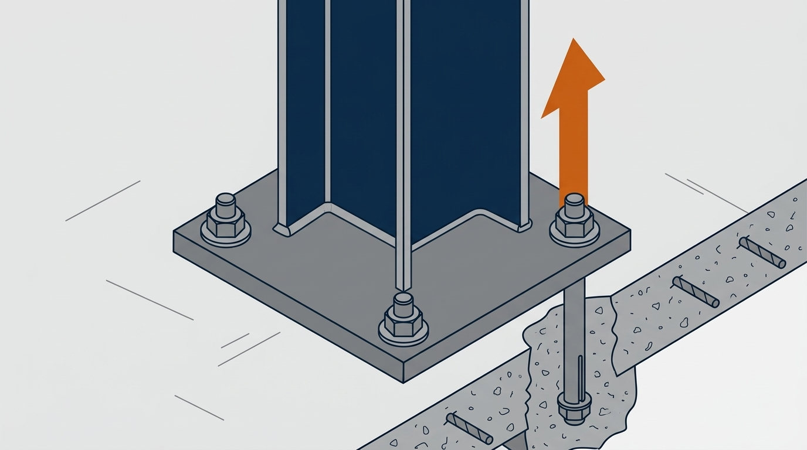

架台や設備を床に固定するアンカーボルトは、「M12を4本」と決まった形で選ばれがちです。しかし、柱の根元に曲げがかかると、アンカーボルトには思った以上の引き抜き力がかかります。本記事では、アンカーボルトの引き抜き計算の方法を、計算例つきで解説します。あわせて、ベースプレートの厚さの決め方までを扱います。
特集の「架台の強度計算」「ロボット架台の強度計算」「溶接の強度計算」の続きです。前の記事で求めた柱の根元の力を使って、床までの力の流れを確かめます。後半には、ご自身の条件を入れて試せる計算ツールと、架台が浮かないアンカーを選ぶゲームがあります。数値はすべて説明用の例で、一般論にとどまる値には「要確認」と記しています。
計算例の適用範囲
- 本記事は、アンカーボルトとベースプレートを単純な形に置き換えて、基本の計算方法を説明するものです。実際の固定部の安全性を保証するものではありません
- アンカーの耐力の式と許容値の決め方は、建築・土木・設備といった分野ごとの指針や、アンカーメーカーの資料で違います。本記事の値は一例です
- 本記事で紹介する建築設備の耐震計算の式、建物の耐震改修のためのアンカーの指針、クレーンの構造規格は、考え方の例です。一般の機械の架台に、そのまま当てはまる決まりではありません
- 実際の設計では、使うアンカーの技術資料の値、床のコンクリートの強度と厚さ、施工の条件を確かめ、専門家の確認を受けてください
この記事でわかること
- アンカーボルト1本にかかる引き抜き力とせん断力の求め方（2つの方法）
- あと施工アンカーの3つの壊れ方と、耐力の式
- 式の値と、メーカーの技術資料の値の使い分け
- ベースプレートの厚さの決め方と、自分の条件で試せる計算ツール
- ロボットに合ったアンカーの太さと本数を選ぶゲーム
アンカーボルトの計算で確かめる4つのこと
架台の柱にかかった力は、溶接を通ってベースプレートに伝わり、アンカーボルトから床のコンクリートへ流れていきます。柱の根元（柱脚）で確かめることは、次の4つです。溶接は「溶接の強度計算」で扱ったので、本記事ではその先を扱います。
- ① アンカーボルトの引き抜き：柱の根元の曲げで、引張側のボルトが床から引き抜かれる力
- ② アンカーボルトのせん断：横向きの力で、ボルトが横にずらされる力
- ③ ベースプレートの曲げ：ボルトに引っ張られて、板が曲がる力
- ④ 床のコンクリートが押される力：反対側で、プレートが床を押す力
架台の場合、いちばん厳しくなりやすいのは①の引き抜きです。横向きの力そのものより、横向きの力が柱の高さで生む曲げが、引き抜き力になるためです。
この章のまとめ
- 柱の根元では、引き抜き・せん断・プレートの曲げ・床が押される力の4つを確かめる
- 架台では、柱の根元の曲げから生まれる引き抜きが厳しくなりやすい
アンカーボルトの引き抜き計算｜1本にかかる力の求め方
アンカーボルト1本にかかる力の求め方は、設備や架台の形で2つに分かれます。設備や、筋かいで固めた架台のように、全体が一つのかたまりとして倒れようとする場合と、筋かいのない架台のように、柱の根元ごとに曲げを受ける場合です。
設備が一体で倒れようとする場合｜設備の耐震計算の式
制御盤や、筋かいで固めた架台の上の設備は、地震などの横向きの力で、全体が一つのかたまりとして倒れようとします。建物に据え付ける設備の耐震計算では、次の式で、アンカーボルト1本の引き抜き力を求めます（建築設備の耐震設計の指針の考え方・要確認）。倒そうとするモーメントから、重さが倒れを止める分を引き、ボルトの間隔と本数で割る形です。
横の力 Fh ＝ 質量 W × 重力加速度 g × 係数 Kh
縦の力 Fv ＝ Fh ÷ 2（縦の揺れを横の半分とする）
引き抜き力（1本） Rb ＝ ｛Fh × hG −（W × g − Fv）× ℓG｝÷（ℓ × nt）
せん断力（1本） Q ＝ Fh ÷ n
W は設備の質量（kg）で、重力加速度 g を掛けて重さ（N）にしてから使います。hG は床から重心までの高さ、ℓ は倒れる向きに見たボルトの間隔、ℓG はボルトから重心までの水平の距離です。nt は片側（引き抜かれる側）のボルトの本数、n はボルトの総本数です。
係数 Kh は、設置する階、地域、設備の種類や耐震の重要度に応じて決めます（要確認）。縦の力を横の半分とするのは、建築設備の耐震計算での決め方で、どの機械にも成り立つ決まりではありません。せん断力は、横の力をすべてのボルトが均等に受けるとした簡易な仮定です。プレートの変形や、ボルト穴のすき間によっては、均等になりません。
計算例1：背の高い制御盤
重さ300kg、重心の高さ1,000mm、奥行き方向のボルトの間隔500mm、重心はその中央、ボルトは4本（片側2本）とします。係数 Kh は仮に0.6とします。
Fh ＝ 300 × 9.81 × 0.6 ＝ 1,765 N
Fv ＝ 1,765 ÷ 2 ＝ 883 N
Rb ＝ ｛1,765 × 1,000 −（2,942 − 883）× 250｝÷（500 × 2）
＝（1,765,200 − 514,850）÷ 1,000 ＝ 約1,250 N
Q ＝ 1,765 ÷ 4 ＝ 約441 N
式の中で、重さは倒れを止める向きに効いています。背が低く、ボルトの間隔が広い設備では、計算すると引き抜き力がマイナスになり、引き抜きは生じないことがあります。その場合も、せん断の確認は必要です。
柱の根元が曲げを受ける場合｜筋かいのない架台
筋かいのない架台では、横向きの力を柱の曲げで受けるため、柱の根元ごとに曲げモーメントがかかります。この曲げを、アンカーボルトの引き抜き力に置き換えます。ここでは、ロボット架台の記事と同じく、圧縮側のボルトの列を回転の中心とみなし、引張側のボルトで曲げを受けるものとして概算します。柱の軸力は、柱の中心（回転の中心からボルトの間隔の半分）に働き、引き抜きを打ち消す向きに効きます。
引き抜き力（1本） T ＝（M − N × d ÷ 2）÷（d × nt）
せん断力（1本） Q ＝ 柱の根元の横の力 ÷ ボルトの本数
M は柱の根元の曲げモーメント、N は柱の軸力（押す向き）、d は引張側と圧縮側のボルトの列の間隔、nt は引張側のボルトの本数です。押す力がまとまって圧縮側のボルトの列の位置に働く、と仮定した式です。実際は、プレートの下の押す力は広がって分布し、ボルトの伸びやプレートの変形で、力の分かれ方も変わります。そのため、これは簡易な一次評価です（要確認）。
計算例2：設備をのせる架台の柱脚
「架台の強度計算」の計算例（500kgの設備、柱 □50×50×3.2）の柱脚です。ボルトは4本、間隔100mmとします。
M ＝ 294,300 N·mm、N ＝ 1,306 N、横の力 368 N
T ＝（294,300 − 1,306 × 50）÷（100 × 2）＝ 約1,145 N
Q ＝ 368 ÷ 4 ＝ 約92 N
計算例3：ロボット架台の柱脚
「ロボット架台の強度計算」の計算例（柱 □100×100×6、非常停止時の慣性力を含む）の柱脚です。ボルトは4本、間隔150mmとします。
M ＝ 5,208,375 N·mm、N ＝ 3,305 N、横の力 1,250 N
T ＝（5,208,375 − 3,305 × 75）÷（150 × 2）＝ 約16,500 N
Q ＝ 1,250 ÷ 4 ＝ 約313 N
同じ「柱の根元のボルト4本」でも、引き抜き力は計算例2の約14倍になりました。力の高さと、動く力の大きさの差です。せん断力に比べて、引き抜き力がはるかに大きいことにも注目してください。
この章のまとめ
- 一体で倒れる設備は、倒そうとするモーメントから重さの効きを引いて求める
- 筋かいのない架台は、柱の根元の曲げをボルトの間隔で割って求める
- 同じボルト4本でも、引き抜き力は条件で10倍以上変わる
アンカーボルトの強さ｜あと施工アンカーの3つの壊れ方
工場の床に架台を固定するときは、床ができあがったあとに穴をあけて打つ「あと施工アンカー」がほとんどです。穴の中で金属を広げて固定する金属拡張アンカーと、樹脂で固める接着系アンカーに大きく分かれます。どちらも、引き抜かれるときの壊れ方は、主に次の3つです。
国の指針にある、引張の耐力の式
国土交通省の「あと施工アンカー・連続繊維補強設計・施工指針」では、あと施工アンカー1本の引張の耐力を、3つの壊れ方の式で求め、いちばん小さい値をとります。
① ボルトで決まる Ta1 ＝ ボルトの降伏点 × 断面積
② コンクリートで決まる Ta2 ＝ 0.23 × √σB × Ac、Ac ＝ π × le ×（le ＋ da）
③ 付着で決まる（接着系だけ） Ta3 ＝ 10 × √（σB ÷ 21）× π × da × le
引張の耐力 Ta ＝ ①②③のうち最も小さい値
短期許容引張力 Tas ＝ Ta（①で決まる場合）、2/3 × Ta（②か③で決まる場合）
σB はコンクリートの圧縮強度、le は有効埋め込み深さ、da はアンカーの直径、Ac は円すいを床の上から見た面積です。Ac ＝ π × le ×（le ＋ da）は、アンカーが1本で、床の端からも十分離れている場合の面積です。Ta は壊れるときの力（耐力）で、許容値ではありません。指針では、短い期間にかかる力（地震など）に対する許容値 Tas を、上のように Ta から求めます。有効埋め込み深さには、床の上に塗ったモルタルなどの仕上げの厚さは含めません。
ただし、この指針は建物の耐震改修のためのもので、いつもかかり続ける力（長期の力）にあと施工アンカーを使うことは、対象外としています。架台の重さや、くり返し動く設備の力は、長期の力です。長期の力には、次に紹介するメーカーの技術資料の値を使います。
計算例：M12の接着系アンカー
ボルトは SS400 の全ねじ（径16mm以下の降伏点245MPa、ねじ部の有効断面積84.3mm²）、有効埋め込み深さ110mm、コンクリートの圧縮強度21MPaとします（断面積と埋め込み深さは製品ごとの決まりに従う・要確認）。
① Ta1 ＝ 245 × 84.3 ＝ 約20,700 N
② Ac ＝ π × 110 ×（110 ＋ 12）＝ 約42,160 mm²、Ta2 ＝ 0.23 × √21 × 42,160 ＝ 約44,400 N
③ Ta3 ＝ 10 × √（21 ÷ 21）× π × 12 × 110 ＝ 約41,500 N
Ta ＝ 約20,700 N（ボルトで決まる）、短期許容引張力 Tas ＝ 約20,700 N
この条件では、コンクリートと付着は約4万N、ボルトは約2万Nで、ボルトが先に負けます。埋め込みが浅い、コンクリートが弱い、床の端に近いといった条件では、コンクリート側が先に負けるようになります。これは式の計算例で、製品の許容荷重や、施工したアンカーの強さをそのまま示すものではありません。
メーカーの技術資料の値と比べる
メーカーの技術資料には、アンカー1本の許容引張荷重が、長期と短期に分けて載っています。ある接着系アンカーの資料（M12相当、穿孔の深さ110mm、コンクリート強度21MPa）では、長期13.7kN、短期20.6kNで、コンクリートの破壊で決まる値とされていました（製品ごとに違う・要確認）。同じ資料には、ボルト側の許容荷重と比べて、小さい方を使うよう書かれています。
上の③の値41,500Nと比べると、この例では長期はおよそ1/3、短期はおよそ1/2にあたります。ただし、製品の許容荷重と式の耐力は、評価の条件も定義も違うため、この比率を一般的な換算の係数として使うことはできません。製品の値は、製品ごとの施工条件（穴の径と深さなど）で決まっています。このように、同じ太さのアンカーでも、基準や製品によって許容値が変わります。設計では、使う製品の技術資料の値を、その施工条件のとおりに使い、どの基準の値かを計算書に書きます。
ボルト側の長期の許容値を、本特集で使っている機械の構造物の規格の例で求めます。クレーン構造規格の考え方では、許容応力は「降伏点÷1.5」と「引張強さ÷1.8」の小さい方で、SS400（径16mm以下、降伏点245MPa、引張強さ400MPa）では163MPaです。163 × 84.3 ＝ 約13,700 N で、このM12では、製品の長期の値とほぼ同じになりました。なお、この規格はクレーンの構造部分のためのもので、一般の機械のボルトの許容値を決めるものではありません。どの基準を使うかは、設計者が決めて明記します（要確認）。
へりあきと、アンカーどうしの間隔
コンクリートの円すいは、埋め込み深さと同じくらいの半径で広がります。床の端に近い（へりあきが小さい）と円すいが欠け、アンカーどうしが近いと円すいが重なって、どちらも耐力が下がります。
技術資料には、所定の耐力を出せるへりあきと間隔の条件が書かれています。条件を満たせない場合は、資料にある低減の方法で耐力を下げて計算します（要確認）。
この章のまとめ
- あと施工アンカーは、ボルト・コンクリート・付着の3つの壊れ方で、いちばん弱いもので決まる
- 国の指針は耐震改修向けで、長期の力は対象外。長期はメーカーの技術資料の値を使う
- 同じアンカーでも、基準によって許容値が違う。ボルト側とアンカー側の小さい方を使う
- へりあきが小さい、間隔が狭いと、耐力は下がる
アンカーボルトの判定｜計算例の続き
第2章で求めた引き抜き力を、M12のアンカーの長期の許容引張荷重13.7kN（技術資料の例とボルト側の値の小さい方）と比べます。
| 計算例 | 引き抜き力（1本） | 13.7kN に対して |
|---|---|---|
| 1 制御盤 | 約1,250 N | 9％ |
| 2 設備をのせる架台 | 約1,145 N | 8％ |
| 3 ロボット架台 | 約16,500 N | 121％（超過） |
ロボット架台の柱脚では、M12は長期の許容値を超えました。対策は、次の3つです。
- アンカーを太くする：M16にすると、技術資料の例で長期22.2kN、ボルト側は163 × 157 ＝ 約25,600 N。小さい方の22.2kNに対して74％になります
- ボルトの間隔を広げる：間隔を150mmから250mmにすると、T ＝（5,208,375 − 3,305 × 125）÷（250 × 2）＝ 約9,590 N で、M12でも70％です。その分、ベースプレートは大きくなります
- 柱の根元の曲げを減らす：筋かいを入れる、柱を太くするなど、架台の側で曲げを減らします
非常停止は、めったに起きない力なので短期の値で判定したくなります。しかし、ロボットは通常の運転でも加速と減速をくり返します。通常の運転、非常停止、地震を分けて力を求め、それぞれに合った許容値で確かめます。本記事では、非常停止の力を含めた値を、余裕を見て長期の許容値と比べました。くり返しの力については、疲労も別に確かめます（要確認）。せん断力は、この例ではどれも引き抜きよりずっと小さい値でした。引き抜きとせん断が同時にかかるときの確かめ方は、技術資料に従います。
この章のまとめ
- 設備や静かな架台では、M12でも余裕が大きい
- ロボット架台の柱脚では、M12は長期の許容値を超えた
- 対策は、アンカーを太くする、間隔を広げる、柱の根元の曲げを減らすの3つ
ベースプレートの厚さの決め方
引張側のアンカーボルトは、ベースプレートを上に引っ張ります。板は、柱の面を根元とする片持ちの板のように曲がります。この曲げから、必要な厚さを求めます。
柱の面からボルトまでの距離 e ＝（ボルトの間隔 d − 柱の幅 D）÷ 2
板の曲げモーメント Mp ＝ 引張側のボルトの本数 × T × e
板の曲げ応力 σ ＝ 6 × Mp ÷（B × t²） （B：プレートの幅、t：厚さ）
必要な厚さ t ＝ √｛6 × Mp ÷（B × 許容応力）｝
この式は、次のように仮定した簡易な計算です。柱の面を、板が固定された根元とみなします。引張側のボルトの力は、すべて同じ腕の長さ e で働くとします。プレートの幅 B は、そのまま曲げに効く幅（有効幅）とします。実際は、リブの有無、ボルトの配置、床との当たり方で板の支え方が変わり、有効幅は全幅より狭くなることがあります。ボルト穴のまわりの変形や、ボルト自体の曲げも、この計算には含みません（要確認）。
計算例：ロボット架台のベースプレート
柱の幅100mm、ボルトの間隔150mm、プレートの幅220mmとします。許容応力は、溶接の記事と同じ機械の構造物の規格の例（SS400で163MPa）を使います。
e ＝（150 − 100）÷ 2 ＝ 25 mm
Mp ＝ 2 × 16,535 × 25 ＝ 826,750 N·mm
t ＝ √｛6 × 826,750 ÷（220 × 163）｝＝ 約11.8 mm → 12mm以上
許容応力を80MPa（引張強さ400÷5）とすると、約16.8mmで、19mmの板が必要になります。どちらの基準を使うかで、選ぶ板厚が変わります。
設備をのせる架台（計算例2）で同じ計算をすると、必要な厚さは約3.7mmです。ただし、計算上は薄くてよくても、溶接のサイズ（板厚以下が目安）や、ボルトを締めたときのゆがみを考えると、実際にはもっと厚い板を選びます（目安は社内基準による・要確認）。
板が柔らかいと、板の端が床に当たって「てこ」のように働き、ボルトにかかる力が計算より大きくなることがあります（てこ作用）。どのくらい大きくなるかは、板の厚さ、ボルトの配置、柱やリブの硬さで変わります。この計算は、てこ作用を含んでいません。ベースプレートは、計算上の必要な厚さより、余裕をもった厚さにするのが基本です。
床のコンクリートが押される力
反対側では、プレートが床を押します。第2章の式と同じ仮定（押す力がまとまって働く）で、押す力を引張側のボルトの合計と柱の軸力の和とみなすと、計算例3では約36,400Nです。これを、プレートの端から柱の面までの帯（220×60mm）で受けると仮定すると、約2.8MPaになります。実際に床に当たる面積と押す力の分布は、プレートの変形で変わるため、これは概算です。床のコンクリートの許容値、床の厚さ、端からの距離、ひび割れは、別に確かめます（要確認）。
この章のまとめ
- ベースプレートは、柱の面を根元とする片持ちの板として、必要な厚さを求める
- ボルトを柱から離すほど、板の曲げは大きくなる
- 板が薄いと「てこ」の力でボルトの力が増える。計算より余裕をもった厚さにする
自分の条件で試す｜アンカーボルトとベースプレートの計算ツール（概算）
ここまでの計算を、ご自身の条件に置き換えて試せます。力のかかり方を選ぶと、図と入力する項目が切り替わります。初期値は、本記事の計算例3（ロボット架台の柱脚）と同じです。
アンカーボルトとベースプレートの概算
本記事と同じ単純化（柱の根元の曲げは、圧縮側のボルトの列を回転の中心とする。一体で倒れる場合は、建築設備の耐震計算の式。ベースプレートは柱の面を根元とする片持ちの板）による概算です。アンカーの許容引張荷重は、使う製品の技術資料の値と、ボルト側の値の小さい方を入れてください。初期値の13,700Nは、本記事のM12の例です。へりあき・間隔による低減、引き抜きとせん断の組み合わせ、てこの力、くり返しの力による疲労、施工の品質は計算に含みません。結果は設計の可否を保証するものではありません。実際の設計では、製品の技術資料と専門家の確認にもとづいて判断してください。
力のかかり方
オレンジの矢印が、アンカーボルト1本にかかる引き抜き力です。入力に合わせて数値が変わります。
柱の根元にかかる力と、ボルトの配置
許容引張荷重の例（本記事の長期の値）
ベースプレート
結果
| 横の力 Fh ／ 縦の力 Fv | N ／ N |
|---|---|
| アンカー1本の引き抜き力 | N |
| アンカー1本のせん断力 | N |
| 柱の面からボルトまで e | mm |
| プレートの曲げモーメント | N·mm |
| プレートの必要な厚さ | mm |
やってみよう｜架台が浮かないアンカーを選ぶゲーム
門型の架台に、ロボットを天吊りします。ロボットの大きさは、毎回変わります。選べるのは、柱の根元を床に止めるアンカーの太さと本数だけです。足りないとアンカーが抜けて架台が浮き、多すぎると穴あけの手間と費用が大変になります。
アンカー選びゲーム
今回のロボット：
アンカーの太さ
柱1本あたりの本数
判定は、本記事の計算と同じ式（柱の根元の曲げから、圧縮側のボルト列を回転の中心として求めた引き抜き力。ボルトの間隔150mm、柱は□125×6、ロボットの条件はロボット架台の記事と同じ）で求めたアンカー1本の引き抜き力を、本記事で紹介した長期の許容引張荷重の例（M10 9.1kN、M12 13.7kN、M16 22.2kN、M20 32.9kN）と比べて決めています。ゲームなので、110％までは成功とし、30％未満は「多すぎ」としています。抜け方の動きは、分かりやすくするための演出です。
アンカーボルトの計算でよくある失敗
床の仕上げの厚さまで、埋め込み深さに入れる
床の上にモルタルなどの仕上げがあると、穴の深さは同じでも、コンクリートに効いている深さは浅くなります。有効埋め込み深さは、コンクリートの部分だけで数えます。
床の端や、目地・ひび割れの近くに打つ
円すいが欠けて、耐力が大きく下がります。架台の柱を床の端や、伸縮目地のすぐそばに置く場合は、配置を先に見直します。
長期の力に、短期の許容値を使う
本記事で紹介した製品の例では、短期の許容値は長期の約1.5倍でした（比率は製品ごとに違います）。架台の重さや、くり返し動く設備の力に短期の値を使うと、余裕を大きく見誤ります。
穴あけで、床の鉄筋に当たる
鉄筋に当たったまま浅く打つ、鉄筋を切って打つ、といったことが起きがちです。床の鉄筋の位置が分からない場合は、探査してから位置を決めます。
くり返しの力で、ナットがゆるむ
振動やくり返しの力がかかる設備では、ナットがゆるんだり、アンカーが少しずつ抜けたりすることがあります。ゆるみ止めの方法と、定期的な点検を決めておきます（要確認）。
この章のまとめ
- 有効埋め込み深さは、床の仕上げを除いて数える
- 床の端・目地・ひび割れの近くは避ける
- 長期の力には、長期の許容値を使う
アンカーボルトの計算書に残す項目
- アンカーの種類、径、本数、配置（間隔、へりあき）
- 有効埋め込み深さと、床の仕上げの厚さ
- 床のコンクリートの強度と厚さ（設計の値か、調べた値か）
- 引き抜き力とせん断力の求め方（式、係数、力の高さ）
- 許容値とその出典（製品の技術資料、長期か短期か）
- ベースプレートの寸法と厚さ、許容応力の基準
- 計算に含めていないもの（くり返しの力による疲労、施工の品質など）
アンカーボルトの計算でよくある質問
床の厚さは、どのくらい必要ですか
アンカーの技術資料に、使える床の厚さの条件が書かれています。埋め込み深さに対して床が薄いと、裏側まで割れが届くおそれがあるため、条件を満たさない場合は、アンカーの種類か配置を見直します（要確認）。
アンカーの施工に、資格は必要ですか
あと施工アンカーには、業界団体による施工者の資格制度があります。すべての工事に法律で一律に求められる資格ではありませんが、発注者の仕様や、製品の条件によって、資格者による施工を求められることがあります（要確認）。計算どおりの強さは、決められた穴の径と深さ、穴の清掃、硬化時間などを守って、はじめて出ます。
まとめ
アンカーボルトの引き抜き計算は、柱の根元の曲げを、ボルトの間隔で割るのが基本です。設備が一体で倒れる場合は、重さが倒れを止める効きも入れます。求めた力は、使う製品の技術資料の許容値と、ボルト側の許容値の小さい方と比べます。
強くする方法は、アンカーを太くすること、ボルトの間隔を広げること、そして柱の根元の曲げを減らすことです。ベースプレートは、計算した厚さより余裕をもって選びます。まずは計算ツールで、ご自身の条件を試してみてください。
参考
・国土交通省「あと施工アンカー・連続繊維補強設計・施工指針」（引張耐力の式、短期許容引張力）
・設備が一体で倒れる場合の式：建築設備の耐震設計・施工の指針（日本建築センター）の考え方
・許容応力の基準（163MPa）：厚生労働省「クレーン構造規格」